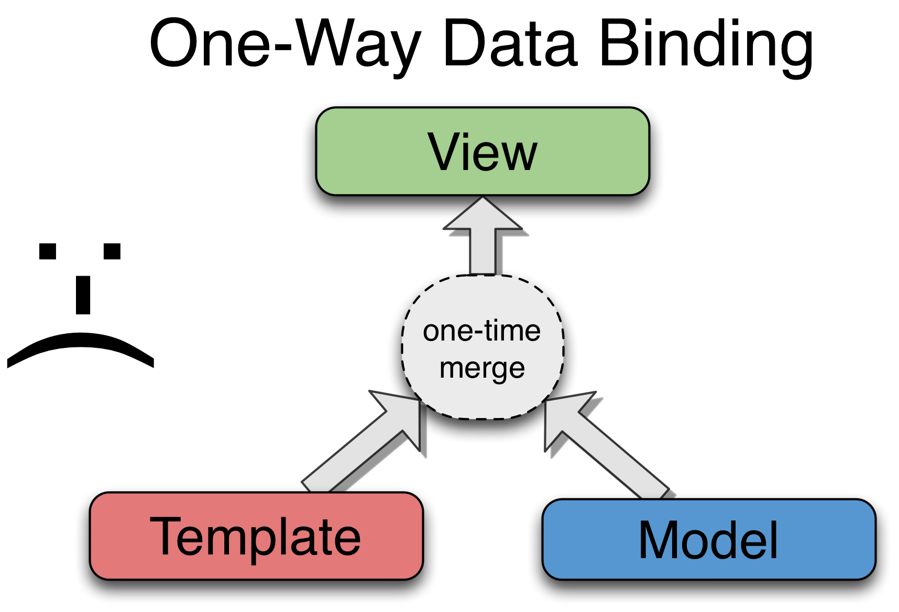
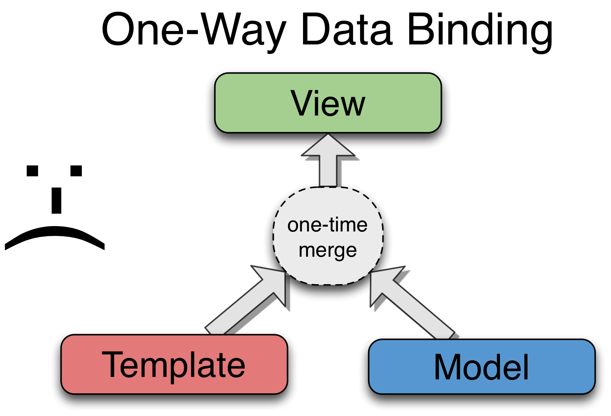

Introdução ao AngularJS
Framework MVW de FrontEnd
Thiago Sciotta
thaigo.sciotta@keeple.com.br
- Framework MVW de FrontEnd
- Desenvolvido pelo Google
- Escrito em Javascript
- Two-way data binding
- Tira do jQuery uma missão que não é dele!
- Independente do jQuery
- IT'S NOT ANOTHER JQUERY
===script===
$(function() {
var name = $('#name3');
var greeting = $('#greeting3');
function update() {
greeting.text('Hello ' + name.val() + '!');
}
update();
name.bind('keydown', function() {
setTimeout(update, 0);
});
});
===/script===
Hello {{firstName}}!
Então você acha que jQuery é ultrapassado ?
Não! Ele é ideal para manipulação DOM!
"... simplifica a manipulação de HTML, manipulação de eventos, animação e interações Ajax para desenvolvimento web rápido."
Two-way data binding...
 


Para uma aplicação ser testável...
1) Ambiente de testes
2) Código testável
É fácil com o AngularJS:
- Separação estrita da view / logica da view
- Injeção de dependência
- ADEUS variáveis globais!!! (global state)
- Aumenta o nível de abstração.
- Ajuda a escrever menos código.
- Transforma seu front-end testável.
- Funciona muito bem com outras libs JS (jQuery, bootstrap etc)
- Ajuda o desenvolvimento e a manutenção de grandes aplicações que envolva grandes recursos de front-end!